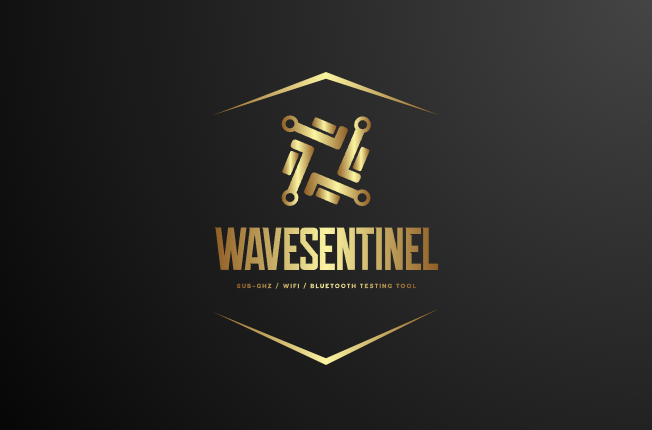

Sub-GHz · WiFi · Bluetooth Testing Tool
CC1101-based capture, playback, scanning, and protocol analysis. Flipper .sub file compatible.
Network scanner, beacon flood, deauth testing, promiscuous sniffer, and STA join.
BLE advertisement spam (Apple, Android, Windows) and BLE device scanner.
Princeton, KeeLoq, CAME, Nice FLO, GateTX, Linear, and more. Real-time analyzer.
3.5" 480x320 capacitive touchscreen with LVGL UI. No external tools needed.
Save and load Flipper .sub captures, presets, and configurations to microSD.